## If packages are missing: install.packages('BiocManager')
## BiocManager::install('...')
## Setting up working directory
library(here)
library(tidyverse)
library(ggplot2)
## color palettes
library(RColorBrewer)
myPalette <- c(brewer.pal(9, "Set1"), brewer.pal(8, "Set2"))
## DE analysis
library(DESeq2)
library(vsn)
library(edgeR)
library(scater)
## Needed for GSEA
library(fgsea)
library(org.Mm.eg.db)
library(GO.db)
saveRDS(devtools::session_info(), "session_info_DESeq2.rds")Loading data in R
Read in data
## Load the prepared RangedSummarizedExperiment object and convert to
## DESeqDataSet
rse <- readRDS("rse_SRP218156.rds")
dds <- DESeqDataSet(rse, design = ~1)Gene filtering
## Apply count data transformation
vst <- varianceStabilizingTransformation(dds, blind = TRUE)
meanSdPlot(assay(vst), ranks = FALSE)Warning: `aes_string()` was deprecated in ggplot2 3.0.0.
ℹ Please use tidy evaluation idioms with `aes()`.
ℹ See also `vignette("ggplot2-in-packages")` for more information.
ℹ The deprecated feature was likely used in the vsn package.
Please report the issue to the authors.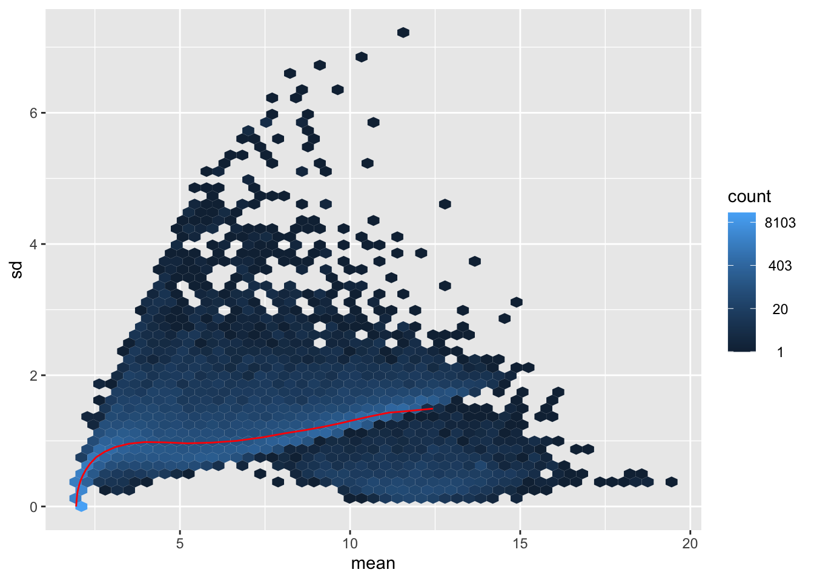
## Visualize distribution before filtering (protein-coding genes only)
plotDensities(assay(vst)[rowData(vst)$gene_type == "protein_coding", ], group = dds$tissue,
col = myPalette, legend = "topright")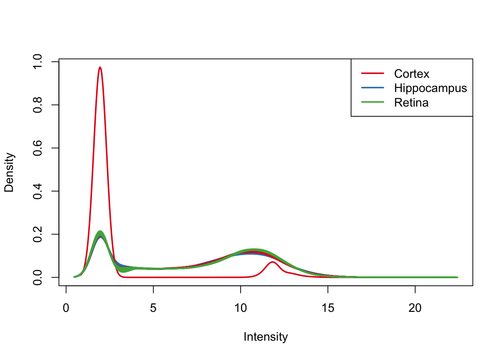
## One cortex sample is weird: let's remove it
dds <- dds[, colnames(dds) != "ctx962"]
## Filter lowly expressed genes We keep only rows that have a count of at least
## 10 for a minimal number of samples
smallestGroupSize <- 3
keep <- rowSums(counts(dds) >= 10) >= smallestGroupSize
table(keep)keep
FALSE TRUE
30107 25314 dds <- dds[keep, ]
## Update vst object
vst <- varianceStabilizingTransformation(dds, blind = TRUE)
meanSdPlot(assay(vst), ranks = FALSE)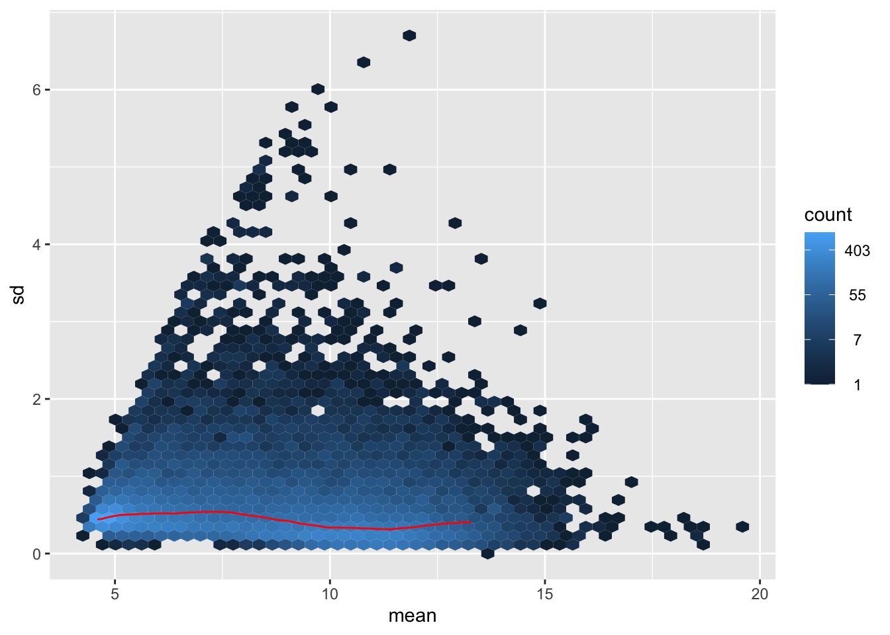
plotDensities(assay(vst), group = dds$group, col = myPalette, legend = "topright")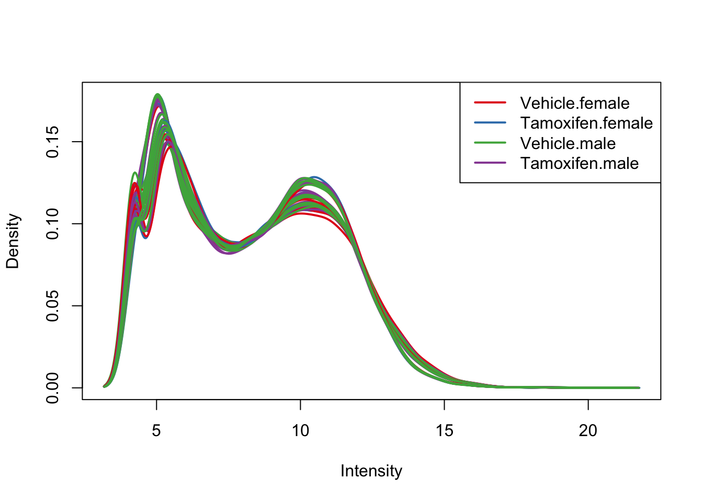
plotDensities(assay(vst), group = dds$tissue, col = myPalette, legend = "topright")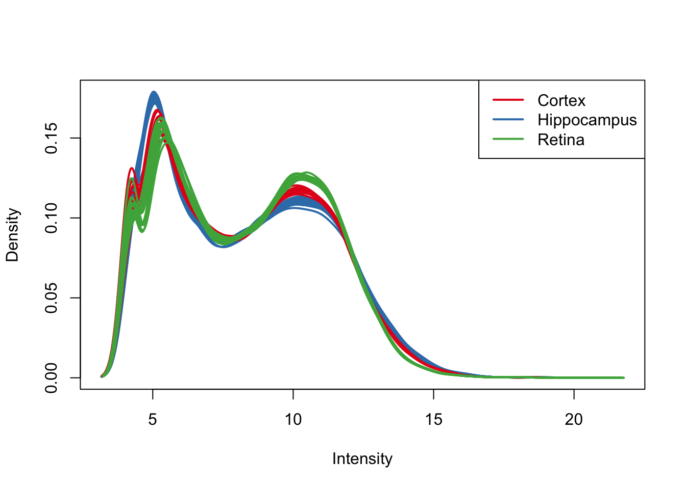
What do you observe?
QC checks
Expression of Xist gene
Xist is a lncRNA regulating the X-chromosome inactivation process in mammals, used to equalize the dosage of X-linked genes between female (XX) and male (XY). It should thus be expressed only in female samples
df <- assay(vst)[grep("Xist", rowData(dds)$gene_name), , drop = FALSE] |>
as_tibble(rownames = NA) |>
rownames_to_column() |>
dplyr::rename(Gene = rowname) |>
pivot_longer(cols = colnames(assay(vst)), names_to = "Sample", values_to = "Normalized expression") |>
left_join(y = as_tibble(colData(dds)), by = join_by("Sample" == "sra.sample_title")) |>
left_join(y = as_tibble(rowData(dds)), by = join_by("Gene" == "gene_id"))
ggplot(df, aes(x = group, y = `Normalized expression`, colour = tissue, group = tissue)) +
facet_wrap(~gene_name, scales = "free_y", ncol = 1) + geom_point(position = position_dodge(0.2),
alpha = 0.8, size = 2) + scale_colour_manual(values = myPalette[1:3]) + theme(axis.text.x = element_text(size = 10,
angle = 90, hjust = 1, vjust = 0.5))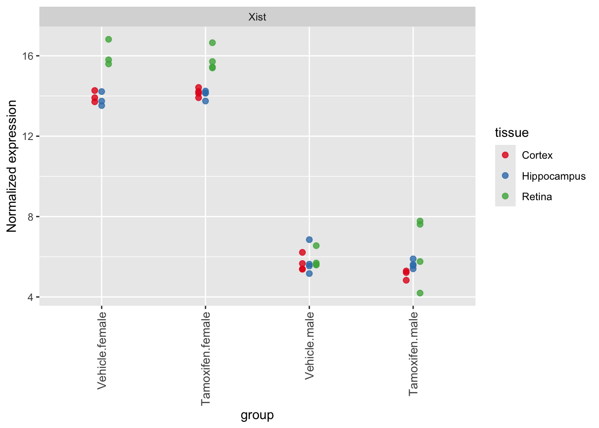
Expression of Y-chromosome genes
## Chromosome information
levels(as.data.frame(rowRanges(dds))$seqnames) [1] "chr1" "chr2" "chr3" "chr4" "chr5"
[6] "chr6" "chr7" "chr8" "chr9" "chr10"
[11] "chr11" "chr12" "chr13" "chr14" "chr15"
[16] "chr16" "chr17" "chr18" "chr19" "chrX"
[21] "chrY" "chrM" "GL456210.1" "GL456211.1" "GL456212.1"
[26] "GL456216.1" "GL456219.1" "GL456221.1" "GL456233.1" "GL456239.1"
[31] "GL456350.1" "GL456354.1" "GL456372.1" "GL456381.1" "GL456385.1"
[36] "JH584292.1" "JH584293.1" "JH584294.1" "JH584295.1" "JH584296.1"
[41] "JH584297.1" "JH584298.1" "JH584299.1" "JH584303.1" "JH584304.1"## How many genes are left in our dataset after filtering?
table(as.data.frame(rowRanges(dds))$seqnames == "chrY")
FALSE TRUE
25300 14 df <- assay(vst)[as.data.frame(rowRanges(dds))$seqnames == "chrY", , drop = FALSE] |>
as_tibble(rownames = NA) |>
rownames_to_column() |>
dplyr::rename(Gene = rowname) |>
pivot_longer(cols = colnames(assay(vst)), names_to = "Sample", values_to = "Normalized expression") |>
left_join(y = as_tibble(colData(dds)), by = join_by("Sample" == "sra.sample_title")) |>
left_join(y = as_tibble(rowData(dds)), by = join_by("Gene" == "gene_id"))
ggplot(df, aes(x = group, y = `Normalized expression`, colour = tissue, group = tissue)) +
facet_wrap(~gene_name, scales = "free_y", ncol = 4) + geom_point(position = position_dodge(0.2),
alpha = 0.8, size = 2) + scale_colour_manual(values = myPalette[1:3]) + theme(axis.text.x = element_text(size = 10,
angle = 90, hjust = 1, vjust = 0.5))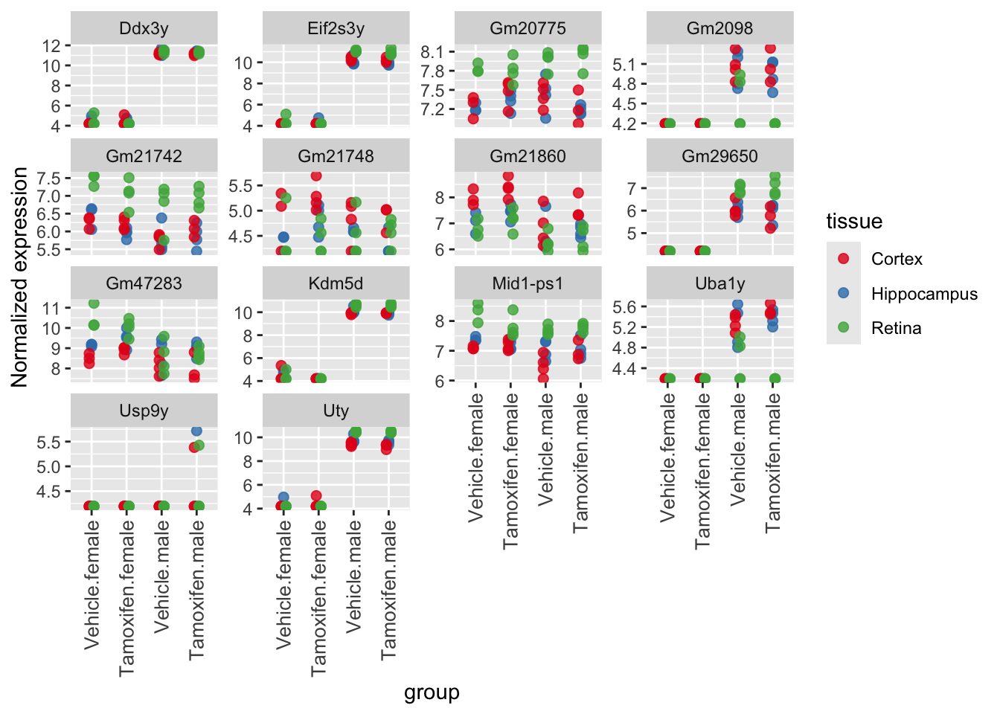
What do you observe? What is going on for some genes? (e.g., Gm20775)
Bigwig files are available through recount3 for some of the samples and allow to visualize the read coverage (for example on the Y-chromosome) on a genome browser. For example you can provide these links to the UCSC genome browser directly:
tail(dds$BigWigURL)[1] "http://duffel.rail.bio/recount3/mouse/data_sources/sra/base_sums/56/SRP218156/14/sra.base_sums.SRP218156_SRR9956114.ALL.bw"
[2] "http://duffel.rail.bio/recount3/mouse/data_sources/sra/base_sums/56/SRP218156/15/sra.base_sums.SRP218156_SRR9956115.ALL.bw"
[3] "http://duffel.rail.bio/recount3/mouse/data_sources/sra/base_sums/56/SRP218156/16/sra.base_sums.SRP218156_SRR9956116.ALL.bw"
[4] "http://duffel.rail.bio/recount3/mouse/data_sources/sra/base_sums/56/SRP218156/17/sra.base_sums.SRP218156_SRR9956117.ALL.bw"
[5] "http://duffel.rail.bio/recount3/mouse/data_sources/sra/base_sums/56/SRP218156/18/sra.base_sums.SRP218156_SRR9956118.ALL.bw"
[6] "http://duffel.rail.bio/recount3/mouse/data_sources/sra/base_sums/56/SRP218156/19/sra.base_sums.SRP218156_SRR9956119.ALL.bw"Principal component analysis
## PCA on top 500 most variable genes
plotPCA(vst, ntop = 500, intgroup = c("tissue", "treatment"), pcsToUse = 1:2) + scale_colour_manual(values = myPalette[1:6]) +
coord_cartesian()Warning: `aes_string()` was deprecated in ggplot2 3.0.0.
ℹ Please use tidy evaluation idioms with `aes()`.
ℹ See also `vignette("ggplot2-in-packages")` for more information.
ℹ The deprecated feature was likely used in the DESeq2 package.
Please report the issue to the authors.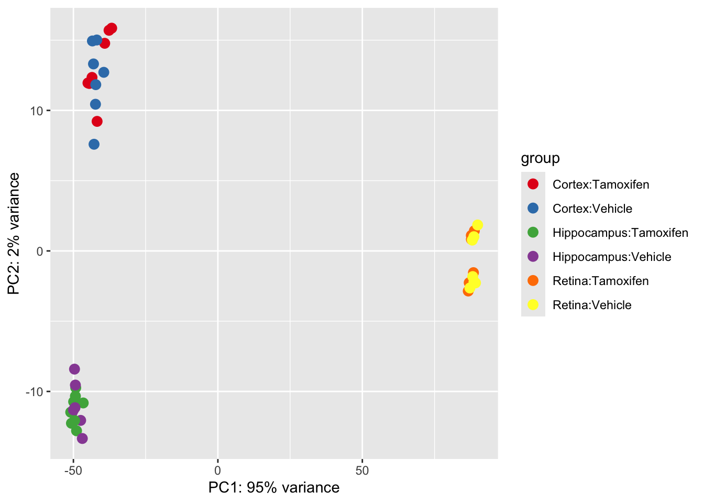
## Which sample metadata associate with which PCs? Let's use the
## getExplanatoryPCs from scater package, which takes as input a
## SingleCellExperiment object containing dimensionality reduction results
select <- order(rowVars(assay(vst)))[seq_len(500)]
pca1 <- prcomp(t(assay(vst)[select, ]))
sce <- SingleCellExperiment(assays = list(logcounts = assay(vst)), reducedDims = list(PCA = pca1$x),
colData = colData(dds))
percentVar <- getExplanatoryPCs(sce, n_dimred = 10, dimred = "PCA", variables = c("sex",
"treatment", "tissue", "mouse"))
percentVar sex treatment tissue mouse
PC1 0.08917004 9.422612e-04 97.92539861 1.381346
PC2 2.45601265 9.015570e-01 74.79962183 10.171582
PC3 6.36324078 8.130475e-01 17.72737215 21.730139
PC4 2.39989264 1.632724e+00 1.91413939 27.651006
PC5 11.16248845 5.743221e+00 1.07570712 42.553952
PC6 12.71284527 1.084092e+01 3.83104620 48.198551
PC7 3.07354419 2.075584e+01 0.02692745 37.307078
PC8 1.86300352 2.851629e+00 0.53194722 45.755141
PC9 1.95180942 1.819178e+01 0.08900467 58.206626
PC10 0.05528160 4.696096e-02 0.34506755 29.943165plotExplanatoryPCs(percentVar/100)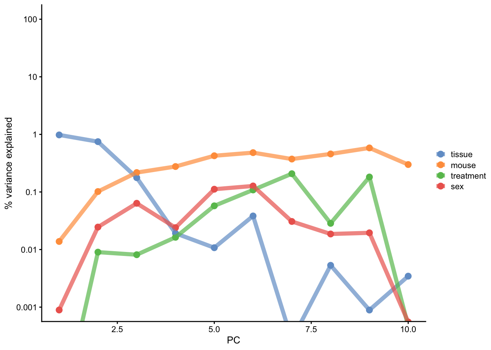
To which principal components contribute which factors? Does this corresponds to the expectations? What do you conclude on the relative effect size of different factors?
## Visualize how some of the factors separate on the PCA, for example sex is
## associated with PC3
plotPCA(vst, ntop = 500, intgroup = c("sex", "treatment"), pcsToUse = 2:3) + scale_colour_manual(values = myPalette[1:6]) +
coord_cartesian()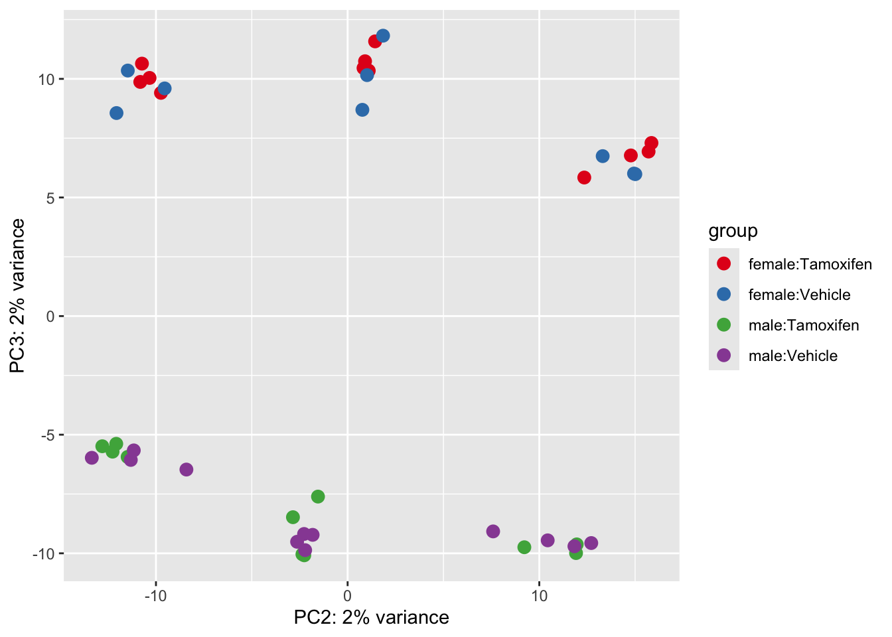
Differential expression analysis
## Update design for DE analysis
design(dds) <- ~0 + group + tissue
## Launch differential expression analysis
dds <- DESeq(dds)
resultsNames(dds)[1] "groupVehicle.female" "groupTamoxifen.female" "groupVehicle.male"
[4] "groupTamoxifen.male" "tissueHippocampus" "tissueRetina" ## Extract results for the different contrasts - Direct male vs. female
## comparison (in controls only) #######################
res <- results(dds, contrast = c("group", "Vehicle.male", "Vehicle.female"))
summary(res)
out of 25314 with nonzero total read count
adjusted p-value < 0.1
LFC > 0 (up) : 19, 0.075%
LFC < 0 (down) : 46, 0.18%
outliers [1] : 45, 0.18%
low counts [2] : 5392, 21%
(mean count < 20)
[1] see 'cooksCutoff' argument of ?results
[2] see 'independentFiltering' argument of ?resultsres <- cbind(res, rowData(dds)$gene_name)
head(res[order(res$pvalue), ], n = 10)DataFrame with 10 rows and 7 columns
baseMean log2FoldChange lfcSE stat pvalue
<numeric> <numeric> <numeric> <numeric> <numeric>
ENSMUSG00000069045 1296.4534 10.289768 0.3405561 30.2146 1.52292e-200
ENSMUSG00000056673 610.3640 8.736114 0.3096079 28.2167 3.64787e-175
ENSMUSG00000086503 15993.1573 -9.743607 0.4468543 -21.8049 2.08535e-105
ENSMUSG00000085715 986.8578 -8.190900 0.4309121 -19.0083 1.45637e-80
ENSMUSG00000069049 748.8289 11.095832 0.5970270 18.5851 4.23872e-77
ENSMUSG00000068457 497.0480 10.134968 0.5745282 17.6405 1.20378e-69
ENSMUSG00000035150 3743.6424 -0.656745 0.0388829 -16.8903 5.30097e-64
ENSMUSG00000098743 160.1305 -10.086746 0.6175810 -16.3327 5.78005e-60
ENSMUSG00000099312 66.7999 -9.216776 0.6228512 -14.7977 1.51541e-49
ENSMUSG00000098262 44.8669 -8.584013 0.6358488 -13.5001 1.56195e-41
padj rowData(dds)$gene_name
<numeric> <character>
ENSMUSG00000069045 3.02712e-196 Ddx3y
ENSMUSG00000056673 3.62544e-171 Kdm5d
ENSMUSG00000086503 1.38169e-101 Xist
ENSMUSG00000085715 7.23706e-77 Tsix
ENSMUSG00000069049 1.68506e-73 Eif2s3y
ENSMUSG00000068457 3.98792e-66 Uty
ENSMUSG00000035150 1.50525e-60 Eif2s3x
ENSMUSG00000098743 1.43613e-56 Gm27927
ENSMUSG00000099312 3.34686e-46 Gm27733
ENSMUSG00000098262 3.10469e-38 Gm27520## For visualization: since we account for tissue in the model, it makes sense
## to correct the expression values for this effect
mm <- model.matrix(~group, colData(vst))
mat <- removeBatchEffect(assay(vst), batch = vst$tissue, design = mm)
vst.corrected <- vst
assay(vst.corrected) <- mat
df <- assay(vst.corrected)[row.names(head(res[order(res$pvalue), ], n = 10)), ] |>
as_tibble(rownames = NA) |>
rownames_to_column() |>
dplyr::rename(Gene = rowname) |>
pivot_longer(cols = colnames(assay(vst.corrected)), names_to = "Sample", values_to = "Normalized expression") |>
left_join(y = as_tibble(colData(dds)), by = join_by("Sample" == "sra.sample_title")) |>
left_join(y = as_tibble(rowData(dds)), by = join_by("Gene" == "gene_id"))
ggplot(df, aes(x = group, y = `Normalized expression`, group = tissue, col = tissue)) +
facet_wrap(~gene_name, scales = "free_y", ncol = 5) + geom_point(position = position_dodge(0.2),
alpha = 0.8, size = 2) + scale_colour_manual(values = myPalette[1:3]) + theme(axis.text.x = element_text(size = 10,
angle = 90, hjust = 1, vjust = 0.5))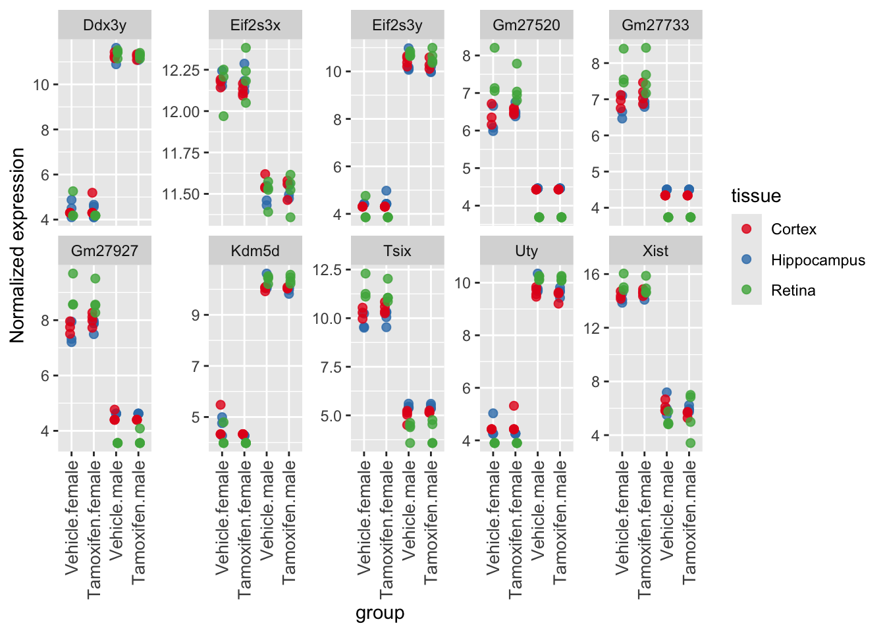
# - effect of Tamoxifen treatment in males
# #####################################
res <- results(dds, contrast = c("group", "Tamoxifen.male", "Vehicle.male"))
summary(res)
out of 25314 with nonzero total read count
adjusted p-value < 0.1
LFC > 0 (up) : 18, 0.071%
LFC < 0 (down) : 32, 0.13%
outliers [1] : 45, 0.18%
low counts [2] : 7839, 31%
(mean count < 53)
[1] see 'cooksCutoff' argument of ?results
[2] see 'independentFiltering' argument of ?resultsres <- cbind(res, rowData(dds)$gene_name)
head(res[order(res$pvalue), ], n = 10)DataFrame with 10 rows and 7 columns
baseMean log2FoldChange lfcSE stat pvalue
<numeric> <numeric> <numeric> <numeric> <numeric>
ENSMUSG00000066687 1775.0417 -0.979866 0.1059546 -9.24798 2.28771e-20
ENSMUSG00000022602 8859.8087 0.580085 0.0765352 7.57932 3.47379e-14
ENSMUSG00000021250 1608.6033 0.524210 0.0791697 6.62135 3.55943e-11
ENSMUSG00000025316 1183.0364 -0.371149 0.0604447 -6.14031 8.23621e-10
ENSMUSG00000025324 412.8755 -0.503888 0.0911208 -5.52989 3.20438e-08
ENSMUSG00000032193 1258.5556 0.405530 0.0736310 5.50761 3.63748e-08
ENSMUSG00000025952 34.6641 17.659165 3.2301709 5.46694 4.57859e-08
ENSMUSG00000021311 1365.3794 -0.302927 0.0607354 -4.98766 6.11158e-07
ENSMUSG00000037112 1931.8700 -0.342715 0.0710251 -4.82526 1.39820e-06
ENSMUSG00000008090 545.7222 0.333664 0.0693645 4.81030 1.50700e-06
padj rowData(dds)$gene_name
<numeric> <character>
ENSMUSG00000066687 3.98747e-16 Zbtb16
ENSMUSG00000022602 3.02741e-10 Arc
ENSMUSG00000021250 2.06803e-07 Fos
ENSMUSG00000025316 3.58893e-06 Banp
ENSMUSG00000025324 1.05669e-04 Atp10a
ENSMUSG00000032193 1.05669e-04 Ldlr
ENSMUSG00000025952 NA Crygc
ENSMUSG00000021311 1.52178e-03 Mtr
ENSMUSG00000037112 2.91856e-03 Sik2
ENSMUSG00000008090 2.91856e-03 Fgfrl1df <- assay(vst.corrected)[row.names(head(res[order(res$pvalue), ], n = 10)), ] |>
as_tibble(rownames = NA) |>
rownames_to_column() |>
dplyr::rename(Gene = rowname) |>
pivot_longer(cols = colnames(assay(vst.corrected)), names_to = "Sample", values_to = "Normalized expression") |>
left_join(y = as_tibble(colData(dds)), by = join_by("Sample" == "sra.sample_title")) |>
left_join(y = as_tibble(rowData(dds)), by = join_by("Gene" == "gene_id"))
ggplot(df, aes(x = group, y = `Normalized expression`, group = tissue, col = tissue)) +
facet_wrap(~gene_name, scales = "free_y", ncol = 5) + geom_point(position = position_dodge(0.2),
alpha = 0.8, size = 2) + scale_colour_manual(values = myPalette[1:3]) + theme(axis.text.x = element_text(size = 10,
angle = 90, hjust = 1, vjust = 0.5))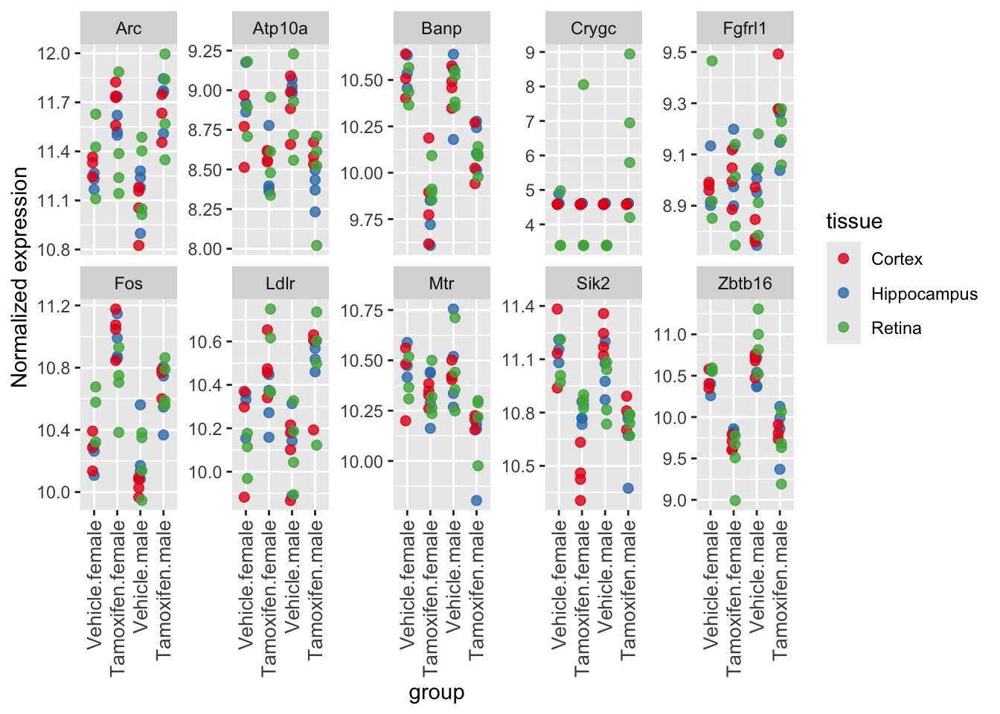
# - effect of Tamoxifen treatment in females
# ###################################
res <- results(dds, contrast = c("group", "Tamoxifen.female", "Vehicle.female"))
summary(res)
out of 25314 with nonzero total read count
adjusted p-value < 0.1
LFC > 0 (up) : 59, 0.23%
LFC < 0 (down) : 227, 0.9%
outliers [1] : 45, 0.18%
low counts [2] : 9310, 37%
(mean count < 94)
[1] see 'cooksCutoff' argument of ?results
[2] see 'independentFiltering' argument of ?resultsres <- cbind(res, rowData(dds)$gene_name)
head(res[order(res$pvalue), ], n = 10)DataFrame with 10 rows and 7 columns
baseMean log2FoldChange lfcSE stat pvalue
<numeric> <numeric> <numeric> <numeric> <numeric>
ENSMUSG00000025316 1183.036 -0.666516 0.0640143 -10.41199 2.18611e-25
ENSMUSG00000004328 262.763 -1.162027 0.1210255 -9.60151 7.87826e-22
ENSMUSG00000066687 1775.042 -0.841603 0.1119219 -7.51956 5.49616e-14
ENSMUSG00000020484 3255.452 -0.332475 0.0466068 -7.13362 9.77653e-13
ENSMUSG00000021250 1608.603 0.579880 0.0833544 6.95680 3.48095e-12
ENSMUSG00000026773 2180.037 -0.412198 0.0611925 -6.73609 1.62704e-11
ENSMUSG00000024222 2141.045 -0.438681 0.0671178 -6.53599 6.31885e-11
ENSMUSG00000035877 3491.865 -0.278293 0.0429140 -6.48491 8.87857e-11
ENSMUSG00000037868 349.935 1.083647 0.1677509 6.45986 1.04803e-10
ENSMUSG00000032846 1792.367 -0.408770 0.0633040 -6.45726 1.06613e-10
padj rowData(dds)$gene_name
<numeric> <character>
ENSMUSG00000025316 3.48881e-21 Banp
ENSMUSG00000004328 6.28646e-18 Hif3a
ENSMUSG00000066687 2.92378e-10 Zbtb16
ENSMUSG00000020484 3.90059e-09 Xbp1
ENSMUSG00000021250 1.11105e-08 Fos
ENSMUSG00000026773 4.32765e-08 Pfkfb3
ENSMUSG00000024222 1.44061e-07 Fkbp5
ENSMUSG00000035877 1.70143e-07 Zhx3
ENSMUSG00000037868 1.70143e-07 Egr2
ENSMUSG00000032846 1.70143e-07 Zswim6df <- assay(vst.corrected)[row.names(head(res[order(res$pvalue), ], n = 10)), ] |>
as_tibble(rownames = NA) |>
rownames_to_column() |>
dplyr::rename(Gene = rowname) |>
pivot_longer(cols = colnames(assay(vst.corrected)), names_to = "Sample", values_to = "Normalized expression") |>
left_join(y = as_tibble(colData(dds)), by = join_by("Sample" == "sra.sample_title")) |>
left_join(y = as_tibble(rowData(dds)), by = join_by("Gene" == "gene_id"))
ggplot(df, aes(x = group, y = `Normalized expression`, group = tissue, col = tissue)) +
facet_wrap(~gene_name, scales = "free_y", ncol = 5) + geom_point(position = position_dodge(0.2),
alpha = 0.8, size = 2) + scale_colour_manual(values = myPalette[1:3]) + theme(axis.text.x = element_text(size = 10,
angle = 90, hjust = 1, vjust = 0.5))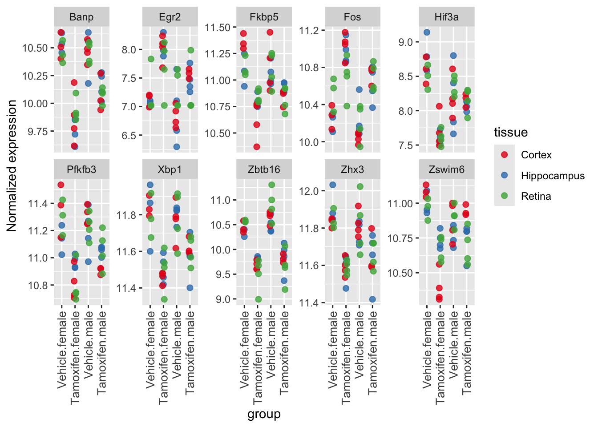
Do the number of DE genes correspond to your expectations from the PCA? What would you conclude on the difference of Tamoxifen effects in male and female? Are some of these genes described in the original paper?
## See Fig 4e and f
data.frame(res[rowData(dds)$gene_name %in% c("Egr2", "Fos", "Dusp1", "Nr4a1", "Sik1",
"Arc", "Egr1", "Plcl2", "Galnt9", "Per2", "Zbtb16", "Map3k13", "Banp"), ]) |>
as_tibble() |>
arrange(padj)# A tibble: 13 × 7
baseMean log2FoldChange lfcSE stat pvalue padj
<dbl> <dbl> <dbl> <dbl> <dbl> <dbl>
1 1183. -0.667 0.0640 -10.4 2.19e-25 3.49e-21
2 1775. -0.842 0.112 -7.52 5.50e-14 2.92e-10
3 1609. 0.580 0.0834 6.96 3.48e-12 1.11e- 8
4 350. 1.08 0.168 6.46 1.05e-10 1.70e- 7
5 3316. 0.464 0.0803 5.77 7.79e- 9 7.28e- 6
6 1502. -0.461 0.0836 -5.51 3.50e- 8 2.33e- 5
7 2229. -0.302 0.0556 -5.42 5.88e- 8 3.75e- 5
8 8860. 0.319 0.0805 3.96 7.50e- 5 1.16e- 2
9 9691. 0.437 0.111 3.95 7.89e- 5 1.20e- 2
10 1210. 0.323 0.0836 3.87 1.10e- 4 1.53e- 2
11 2458. -0.159 0.0610 -2.61 8.97e- 3 2.37e- 1
12 672. 0.233 0.100 2.32 2.04e- 2 3.49e- 1
13 3574. -0.152 0.0741 -2.05 4.06e- 2 4.66e- 1
# ℹ 1 more variable: rowData.dds..gene_name <chr>Extracting the interaction term
Although this is not tested explicitely, a main aim of the study is to identify genes reacting differently to Tamoxifen treatment in male and female. It is possible to test this by extracting the interaction between sex and tratment.
See ?DESeq2::results explaining how to extract this effect (Example 3). We need to update the design in the DESeq2 object.
design(dds) <- ~tissue + treatment * sex
dds <- DESeq(dds)
resultsNames(dds)[1] "Intercept" "tissue_Hippocampus_vs_Cortex"
[3] "tissue_Retina_vs_Cortex" "treatment_Tamoxifen_vs_Vehicle"
[5] "sex_male_vs_female" "treatmentTamoxifen.sexmale" ## Select the last coefficient
res <- results(dds, name = "treatmentTamoxifen.sexmale")
summary(res)
out of 25314 with nonzero total read count
adjusted p-value < 0.1
LFC > 0 (up) : 3, 0.012%
LFC < 0 (down) : 0, 0%
outliers [1] : 45, 0.18%
low counts [2] : 0, 0%
(mean count < 1)
[1] see 'cooksCutoff' argument of ?results
[2] see 'independentFiltering' argument of ?resultsres <- cbind(res, rowData(dds)$gene_name)
head(res[order(res$pvalue), ], n = 10)DataFrame with 10 rows and 7 columns
baseMean log2FoldChange lfcSE stat pvalue
<numeric> <numeric> <numeric> <numeric> <numeric>
ENSMUSG00000004328 262.7627 0.996614 0.1662446 5.99487 2.03654e-09
ENSMUSG00000056673 610.3640 3.800710 0.6739355 5.63958 1.70470e-08
ENSMUSG00000025952 34.6641 25.644635 4.6820234 5.47725 4.31975e-08
ENSMUSG00000030168 3687.4690 0.223268 0.0542939 4.11220 3.91904e-05
ENSMUSG00000091462 34.0167 -1.339289 0.3349684 -3.99825 6.38116e-05
ENSMUSG00000052040 6658.2761 0.291482 0.0729475 3.99578 6.44803e-05
ENSMUSG00000037754 4999.1823 0.277067 0.0695490 3.98377 6.78306e-05
ENSMUSG00000032846 1792.3669 0.338061 0.0871774 3.87785 1.05386e-04
ENSMUSG00000025386 29594.0578 -1.676026 0.4442314 -3.77287 1.61383e-04
ENSMUSG00000031431 3227.1025 0.334079 0.0927399 3.60232 3.15390e-04
padj rowData(dds)$gene_name
<numeric> <character>
ENSMUSG00000004328 5.14613e-05 Hif3a
ENSMUSG00000056673 2.15381e-04 Kdm5d
ENSMUSG00000025952 3.63852e-04 Crygc
ENSMUSG00000030168 2.44859e-01 Adipor2
ENSMUSG00000091462 2.44859e-01 Gm17084
ENSMUSG00000052040 2.44859e-01 Klf13
ENSMUSG00000037754 2.44859e-01 Ppp1r16b
ENSMUSG00000032846 3.32874e-01 Zswim6
ENSMUSG00000025386 4.53110e-01 Pde6g
ENSMUSG00000031431 7.24782e-01 Tsc22d3df <- assay(vst.corrected)[row.names(head(res[order(res$pvalue), ], n = 3)), ] |>
as_tibble(rownames = NA) |>
rownames_to_column() |>
dplyr::rename(Gene = rowname) |>
pivot_longer(cols = colnames(assay(vst.corrected)), names_to = "Sample", values_to = "Normalized expression") |>
left_join(y = as_tibble(colData(dds)), by = join_by("Sample" == "sra.sample_title")) |>
left_join(y = as_tibble(rowData(dds)), by = join_by("Gene" == "gene_id"))
ggplot(df, aes(x = group, y = `Normalized expression`, group = tissue, col = tissue)) +
facet_wrap(~gene_name, scales = "free_y", ncol = 5) + geom_point(position = position_dodge(0.2),
alpha = 0.8, size = 2) + scale_colour_manual(values = myPalette[1:3]) + theme(axis.text.x = element_text(size = 10,
angle = 90, hjust = 1, vjust = 0.5))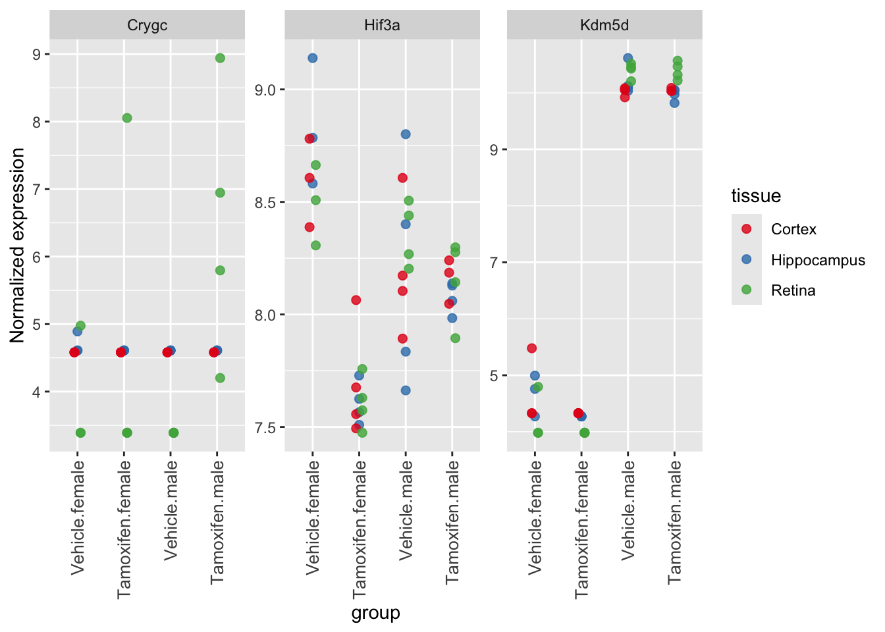
## Looking using uncorrected expression levels
df <- assay(vst)[row.names(head(res[order(res$pvalue), ], n = 3)), ] |>
as_tibble(rownames = NA) |>
rownames_to_column() |>
dplyr::rename(Gene = rowname) |>
pivot_longer(cols = colnames(assay(vst)), names_to = "Sample", values_to = "Normalized expression") |>
left_join(y = as_tibble(colData(dds)), by = join_by("Sample" == "sra.sample_title")) |>
left_join(y = as_tibble(rowData(dds)), by = join_by("Gene" == "gene_id"))
ggplot(df, aes(x = group, y = `Normalized expression`, group = tissue, col = tissue)) +
facet_wrap(~gene_name, scales = "free_y", ncol = 5) + geom_point(position = position_dodge(0.2),
alpha = 0.8, size = 2) + scale_colour_manual(values = myPalette[1:3]) + theme(axis.text.x = element_text(size = 10,
angle = 90, hjust = 1, vjust = 0.5))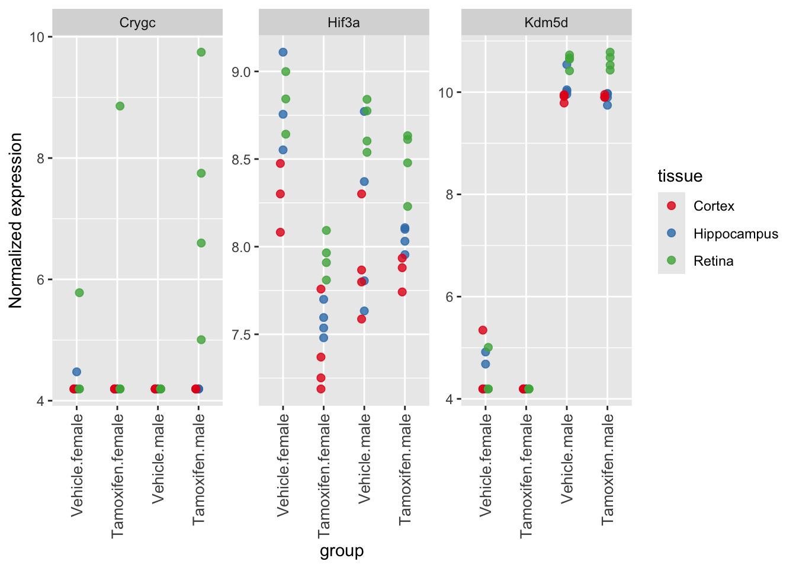
What do you think about these results? Are these genes described in the original paper? How would you describe the behavior of these genes in simple words?
GSEA
Although we detect few significant genes for the interaction, it is possible that some trends are visible “collectively” at the gene set level
GOmapping <- AnnotationDbi::select(org.Mm.eg.db, keys = rowData(dds)$gene_id, keytype = "ENSEMBL",
columns = c("GOALL", "EVIDENCEALL", "ONTOLOGYALL"))
## Transform to list
GOmapping <- tapply(GOmapping$ENSEMBL, list(GOmapping$GOALL), unique)
## Filter gene sets smaller than 10 genes, and gene sets larger than 500 genes
GOmapping <- GOmapping[sapply(GOmapping, length) >= 10 & sapply(GOmapping, length) <
500]
## Run fastGSEA
ranks <- na.omit(setNames(res$log2FoldChange, nm = row.names(res)))
fgseaRes <- fgsea(pathways = GOmapping, stats = ranks)Warning in preparePathwaysAndStats(pathways, stats, minSize, maxSize, gseaParam, : There are ties in the preranked stats (0.03% of the list).
The order of those tied genes will be arbitrary, which may produce unexpected results.## Add info on Gene Ontology terms
fgseaRes <- cbind(fgseaRes, AnnotationDbi::select(GO.db, keys = fgseaRes$pathway,
keytype = "GOID", columns = c("ONTOLOGY", "TERM"))) #, 'DEFINITION')))
table(fgseaRes$padj < 0.05)
FALSE TRUE
8336 12 head(fgseaRes[order(fgseaRes$pval), ], n = 11) pathway pval padj log2err ES NES size
<char> <num> <num> <num> <num> <num> <int>
1: GO:0002088 8.807316e-12 7.352347e-08 0.8753251 0.8496676 2.560970 93
2: GO:0097733 8.415391e-07 3.512584e-03 0.6594444 -0.6545354 -1.895494 120
3: GO:0005212 1.565208e-06 4.355452e-03 0.6435518 0.9323406 2.214142 24
4: GO:0001750 2.877570e-06 6.005488e-03 0.6272567 -0.6760268 -1.880752 92
5: GO:0001654 3.662894e-06 6.115567e-03 0.6272567 0.4910058 1.713859 449
6: GO:0097731 7.661505e-06 1.065971e-02 0.5933255 -0.6185520 -1.800976 134
7: GO:0150063 9.822988e-06 1.125289e-02 0.5933255 0.4908193 1.709236 452
8: GO:0048880 1.078380e-05 1.125289e-02 0.5933255 0.4875506 1.696298 458
9: GO:0001917 1.399205e-05 1.289664e-02 0.5933255 -0.6970645 -1.850433 71
10: GO:0043010 1.544878e-05 1.289664e-02 0.5756103 0.5095899 1.757534 401
11: GO:0002089 3.978742e-05 3.019503e-02 0.5573322 0.8412424 2.052464 27
leadingEdge GOID ONTOLOGY TERM
<list> <char> <char> <char>
1: ENSMUSG0.... GO:0002088 BP lens development in camera-type eye
2: ENSMUSG0.... GO:0097733 CC photoreceptor cell cilium
3: ENSMUSG0.... GO:0005212 MF structural constituent of eye lens
4: ENSMUSG0.... GO:0001750 CC photoreceptor outer segment
5: ENSMUSG0.... GO:0001654 BP eye development
6: ENSMUSG0.... GO:0097731 CC 9+0 non-motile cilium
7: ENSMUSG0.... GO:0150063 BP visual system development
8: ENSMUSG0.... GO:0048880 BP sensory system development
9: ENSMUSG0.... GO:0001917 CC photoreceptor inner segment
10: ENSMUSG0.... GO:0043010 BP camera-type eye development
11: ENSMUSG0.... GO:0002089 BP lens morphogenesis in camera-type eyeTo finish
“Interpretations of sex-related variation are not always commensurate with the story the data actually tell” (Pape et al. 2024). How do you judge the interpretations of the results in the published paper?
Discuss potential limitations of the paper and the conclusion about the absence of Tamoxifen effect.
- What is important to notice in the design of the experiment (tamoxifen treatment duration, batches, number of replicates, …)?
- Have a look at the results and materials and methods section: which analyses were made and how could they influence the results?
Limitations of our reanalysis: what could be improved if we had more time?
- Try subsetting the dataset to one tissue as done by the authors. What do you notice?
“Sex is not a causal mechanism” (Pape et al. 2024): follow-up on some DE genes and try to find which mechanism of action could explain their differential expression patterns.
Discuss what would be the next steps if that was your research project. Which experiments would you design next? How would you describe the results in a paper?
- You can also have a look at other related papers (e.g., https://www.nature.com/articles/s41586-022-04686-1, https://www.ahajournals.org/doi/10.1161/ATVBAHA.123.319922)
- Or look at follow-up papers from the same authors (e.g., https://link.springer.com/article/10.1007/s12035-022-02860-0)
Icons taken from http://www.flaticon.com/